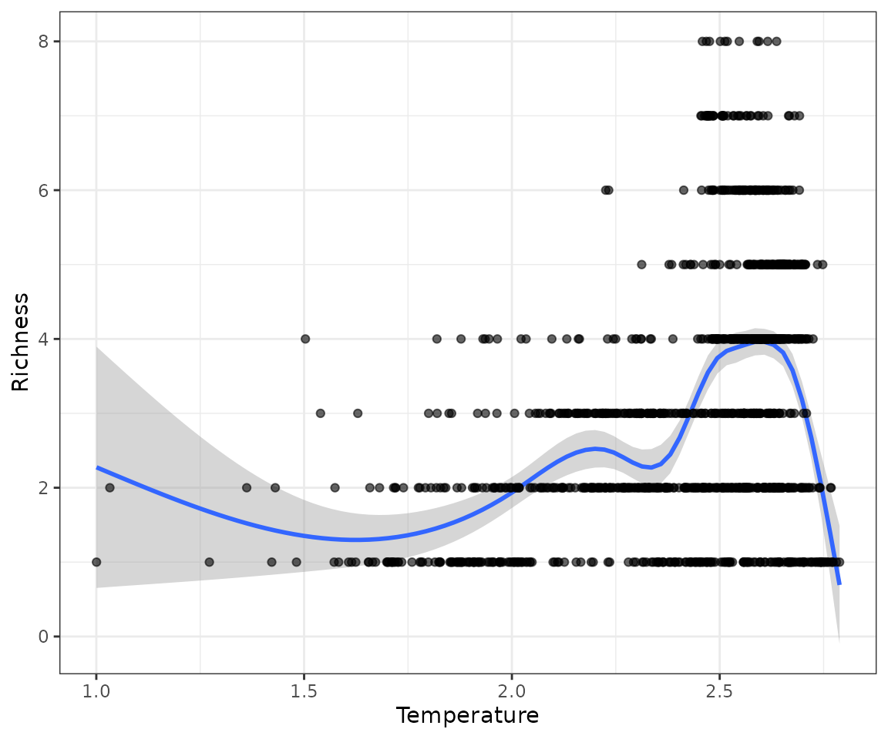

Adding variables to a PresenceAbsence object
Source:vignettes/Adding-variables-to-a-presenceabsence-object.Rmd
Adding-variables-to-a-presenceabsence-object.RmdOnce you have transformed species distribution data into a presence
absence matrix (PAM) in PresenceAbsence format, you may
wish to enhance it by incorporating additional variables. These
variables typically exist in raster format, such as WorldClim
bioclimatic data, or in shapefile format, for instance, global
ecoregions.
Adding variables in raster format
To add variables in raster format to a PresenceAbsence
object we can use the function lets.addvar from the
letsR package. This function takes a raster
object with any resolution and extent, and transform it to match the
information in your PresenceAbsence object. Subsequently,
the variables are included as additional columns containing the
aggregate/summarize value of the variable(s) in each cell of the
presence-absence matrix. Let’s see an example using the bioclimatic data
from WorldClim.
Here we will use the Average temperature raster in Celsius degrees (multiplied by 100) for the world in 10 arc min of resolution.
Here I will use the PresenceAbsence object for
Phyllomedusa species previously generated.
We can now run the lets.addvar function. Just make sure
that the two objects are on the same projection before using the
function. Also, note that the climatic data have a higher resolution
than our PAM. In this case, we could choose a function to aggregate the
values with the argument fun. In most of the situations,
people will be interested in averaging values to aggregate multiple
cells, but in some specific cases you may want to sum them, or get the
standard deviation, or use any another function.
PAM_env <- lets.addvar(PAM, r, fun = mean)
#> Warning in lets.addvar(PAM, r, fun = mean): Reprojecting y to match the
#> projection in xThe result is a presence absence matrix, where the last columns now include the raster values. Check the table:
head(PAM_env)| Longitude(x) | Latitude(y) | Phyllomedusa araguari | Phyllomedusa atelopoides | Phyllomedusa ayeaye | Phyllomedusa azurea | Phyllomedusa bahiana | Phyllomedusa baltea | Phyllomedusa bicolor | Phyllomedusa boliviana | Phyllomedusa burmeisteri | Phyllomedusa camba | Phyllomedusa centralis | Phyllomedusa coelestis | Phyllomedusa distincta | Phyllomedusa duellmani | Phyllomedusa ecuatoriana | Phyllomedusa hypochondrialis | Phyllomedusa iheringii | Phyllomedusa itacolomi | Phyllomedusa megacephala | Phyllomedusa neildi | Phyllomedusa nordestina | Phyllomedusa oreades | Phyllomedusa palliata | Phyllomedusa perinesos | Phyllomedusa rohdei | Phyllomedusa sauvagii | Phyllomedusa tarsius | Phyllomedusa tetraploidea | Phyllomedusa tomopterna | Phyllomedusa trinitatis | Phyllomedusa vaillantii | Phyllomedusa venusta | wc2.1_10m_bio_1_mean |
|---|---|---|---|---|---|---|---|---|---|---|---|---|---|---|---|---|---|---|---|---|---|---|---|---|---|---|---|---|---|---|---|---|---|---|
| -74.5 | 11.5 | 0 | 0 | 0 | 0 | 0 | 0 | 0 | 0 | 0 | 0 | 0 | 0 | 0 | 0 | 0 | 0 | 0 | 0 | 0 | 0 | 0 | 0 | 0 | 0 | 0 | 0 | 0 | 0 | 0 | 0 | 0 | 1 | 26.67511 |
| -69.5 | 11.5 | 0 | 0 | 0 | 0 | 0 | 0 | 0 | 0 | 0 | 0 | 0 | 0 | 0 | 0 | 0 | 0 | 0 | 0 | 0 | 1 | 0 | 0 | 0 | 0 | 0 | 0 | 0 | 0 | 0 | 1 | 0 | 0 | 26.38072 |
| -68.5 | 11.5 | 0 | 0 | 0 | 0 | 0 | 0 | 0 | 0 | 0 | 0 | 0 | 0 | 0 | 0 | 0 | 0 | 0 | 0 | 0 | 0 | 0 | 0 | 0 | 0 | 0 | 0 | 0 | 0 | 0 | 1 | 0 | 0 | 26.75012 |
| -75.5 | 10.5 | 0 | 0 | 0 | 0 | 0 | 0 | 0 | 0 | 0 | 0 | 0 | 0 | 0 | 0 | 0 | 0 | 0 | 0 | 0 | 0 | 0 | 0 | 0 | 0 | 0 | 0 | 0 | 0 | 0 | 0 | 0 | 1 | 27.59441 |
| -74.5 | 10.5 | 0 | 0 | 0 | 0 | 0 | 0 | 0 | 0 | 0 | 0 | 0 | 0 | 0 | 0 | 0 | 0 | 0 | 0 | 0 | 0 | 0 | 0 | 0 | 0 | 0 | 0 | 0 | 0 | 0 | 0 | 0 | 1 | 27.69106 |
| -69.5 | 10.5 | 0 | 0 | 0 | 0 | 0 | 0 | 0 | 0 | 0 | 0 | 0 | 0 | 0 | 0 | 0 | 0 | 0 | 0 | 0 | 1 | 0 | 0 | 0 | 0 | 0 | 0 | 0 | 0 | 0 | 1 | 0 | 0 | 24.01917 |
If you do not want the coordinates and species included you can set
the argument onlyvar = TRUE.
climate <- lets.addvar(PAM, r, fun = mean, onlyvar = TRUE)
#> Warning in lets.addvar(PAM, r, fun = mean, onlyvar = TRUE): Reprojecting y to
#> match the projection in x
head(climate)| wc2.1_10m_bio_1_mean |
|---|
| 26.67511 |
| 26.38072 |
| 26.75012 |
| 27.59441 |
| 27.69106 |
| 24.01917 |
Now that we have the variables, we can use it to relate to our species data in many ways. For example, you could graph the relationship between temperature and species richness.
rich <- rowSums(PAM$P[, -(1:2)])
mpg1 <- data.frame("Temperature" = climate[, 1]/10,
"Richness" = rich)
ggplot(mpg1, aes(Temperature, Richness)) +
geom_smooth() +
geom_point(col = rgb(0, 0, 0, .6)) +
theme_bw()
Adding variables in polygon format
Data in shapefile format like ecorregions, conservation units or
countries, can be added to a PAM using the function
lets.addpoly. This function adds polygons’ attributes as
columns at the right-end of the matrix. The values represent the
percentage of the cell covered by the polygon attribute used. As an
example, we can use the South America countries map available in the
package maptools.
data("wrld_simpl")
SA <- c("Brazil", "Colombia", "Argentina",
"Peru", "Venezuela", "Chile",
"Ecuador", "Bolivia", "Paraguay",
"Uruguay", "Guyana", "Suriname",
"French Guiana")
south_ame <- wrld_simpl[wrld_simpl$NAME %in% SA, ]
ggplot(data = south_ame) +
geom_sf() +
geom_sf_text(aes(label = ISO3)) +
theme_bw()
Now we can add this variables to our PAM.
PAM_pol <- lets.addpoly(PAM, south_ame, "NAME")
head(PAM_pol)| Longitude(x) | Latitude(y) | Phyllomedusa araguari | Phyllomedusa atelopoides | Phyllomedusa ayeaye | Phyllomedusa azurea | Phyllomedusa bahiana | Phyllomedusa baltea | Phyllomedusa bicolor | Phyllomedusa boliviana | Phyllomedusa burmeisteri | Phyllomedusa camba | Phyllomedusa centralis | Phyllomedusa coelestis | Phyllomedusa distincta | Phyllomedusa duellmani | Phyllomedusa ecuatoriana | Phyllomedusa hypochondrialis | Phyllomedusa iheringii | Phyllomedusa itacolomi | Phyllomedusa megacephala | Phyllomedusa neildi | Phyllomedusa nordestina | Phyllomedusa oreades | Phyllomedusa palliata | Phyllomedusa perinesos | Phyllomedusa rohdei | Phyllomedusa sauvagii | Phyllomedusa tarsius | Phyllomedusa tetraploidea | Phyllomedusa tomopterna | Phyllomedusa trinitatis | Phyllomedusa vaillantii | Phyllomedusa venusta | Argentina | Bolivia | Brazil | Chile | Colombia | Ecuador | French Guiana | Guyana | Suriname | Paraguay | Peru | Uruguay | Venezuela |
|---|---|---|---|---|---|---|---|---|---|---|---|---|---|---|---|---|---|---|---|---|---|---|---|---|---|---|---|---|---|---|---|---|---|---|---|---|---|---|---|---|---|---|---|---|---|---|
| -74.5 | 11.5 | 0 | 0 | 0 | 0 | 0 | 0 | 0 | 0 | 0 | 0 | 0 | 0 | 0 | 0 | 0 | 0 | 0 | 0 | 0 | 0 | 0 | 0 | 0 | 0 | 0 | 0 | 0 | 0 | 0 | 0 | 0 | 1 | 0 | 0 | 0 | 0 | 0.1231 | 0 | 0 | 0 | 0 | 0 | 0 | 0 | 0.0000 |
| -69.5 | 11.5 | 0 | 0 | 0 | 0 | 0 | 0 | 0 | 0 | 0 | 0 | 0 | 0 | 0 | 0 | 0 | 0 | 0 | 0 | 0 | 1 | 0 | 0 | 0 | 0 | 0 | 0 | 0 | 0 | 0 | 1 | 0 | 0 | 0 | 0 | 0 | 0 | 0.0000 | 0 | 0 | 0 | 0 | 0 | 0 | 0 | 0.5744 |
| -68.5 | 11.5 | 0 | 0 | 0 | 0 | 0 | 0 | 0 | 0 | 0 | 0 | 0 | 0 | 0 | 0 | 0 | 0 | 0 | 0 | 0 | 0 | 0 | 0 | 0 | 0 | 0 | 0 | 0 | 0 | 0 | 1 | 0 | 0 | 0 | 0 | 0 | 0 | 0.0000 | 0 | 0 | 0 | 0 | 0 | 0 | 0 | 0.1744 |
| -75.5 | 10.5 | 0 | 0 | 0 | 0 | 0 | 0 | 0 | 0 | 0 | 0 | 0 | 0 | 0 | 0 | 0 | 0 | 0 | 0 | 0 | 0 | 0 | 0 | 0 | 0 | 0 | 0 | 0 | 0 | 0 | 0 | 0 | 1 | 0 | 0 | 0 | 0 | 0.3333 | 0 | 0 | 0 | 0 | 0 | 0 | 0 | 0.0000 |
| -74.5 | 10.5 | 0 | 0 | 0 | 0 | 0 | 0 | 0 | 0 | 0 | 0 | 0 | 0 | 0 | 0 | 0 | 0 | 0 | 0 | 0 | 0 | 0 | 0 | 0 | 0 | 0 | 0 | 0 | 0 | 0 | 0 | 0 | 1 | 0 | 0 | 0 | 0 | 0.9641 | 0 | 0 | 0 | 0 | 0 | 0 | 0 | 0.0000 |
| -69.5 | 10.5 | 0 | 0 | 0 | 0 | 0 | 0 | 0 | 0 | 0 | 0 | 0 | 0 | 0 | 0 | 0 | 0 | 0 | 0 | 0 | 1 | 0 | 0 | 0 | 0 | 0 | 0 | 0 | 0 | 0 | 1 | 0 | 0 | 0 | 0 | 0 | 0 | 0.0000 | 0 | 0 | 0 | 0 | 0 | 0 | 0 | 1.0000 |
This information can be used to calculate the number of species per country for example.
vars_col <- (ncol(PAM$P) + 1):ncol(PAM_pol)
n <- length(vars_col)
rich_count <- numeric(n)
for (i in 1:n) {
rich_count[i] <- sum(colSums(PAM$P[PAM_pol[, vars_col[i]] > 0,
-(1:2)]) > 0)
}
labs <- as.factor(colnames(PAM_pol)[vars_col])
names(rich_count) <- labs
mpg <- data.frame("Richness" = rich_count, "Country" = as.factor(labs))
g <- ggplot(mpg, aes(labs, Richness))
g + geom_bar(stat = "identity") + labs(x = "") +
theme(axis.text.x = element_text(angle = 90, hjust = 1))
To cite letsR in publications use: Bruno Vilela and Fabricio Villalobos (2015). letsR: a new R package for data handling and analysis in macroecology. Methods in Ecology and Evolution. DOI: 10.1111/2041-210X.12401